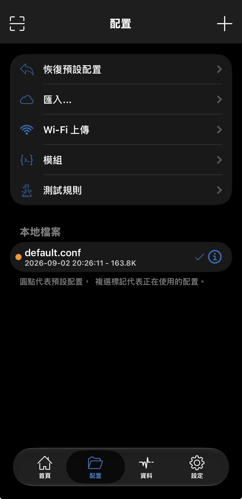
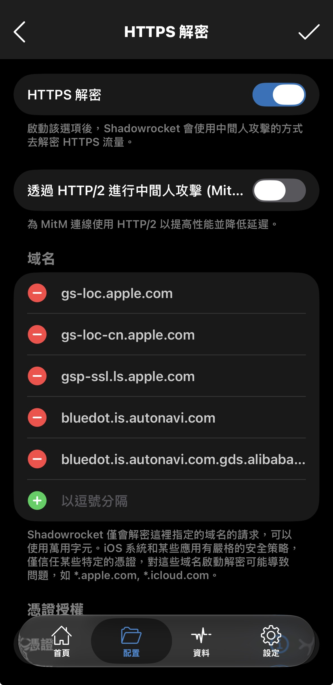
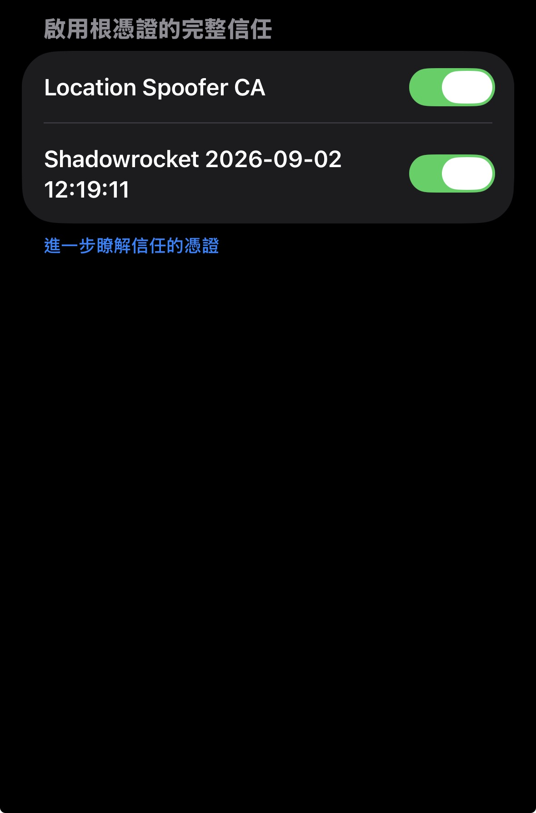

01
MODULE SETUP
新增 WLOC 模組
- 開啟 Shadowrocket，前往「配置」。
- 點選右上角 ＋，貼上以下模組網址：
https://raw.githubusercontent.com/Yu9191/wloc/refs/heads/main/modules/wloc.module下載並儲存後，前往下方的「本地檔案」，找到 WLOC.CONF，確認模組已啟用；右側會顯示勾選符號。

STEP-BY-STEP GUIDE
使用 Shadowrocket 與快捷指令，
完成免越獄的定位設定流程。
MODULE SETUP
https://raw.githubusercontent.com/Yu9191/wloc/refs/heads/main/modules/wloc.module下載並儲存後，前往下方的「本地檔案」，找到 WLOC.CONF，確認模組已啟用；右側會顯示勾選符號。

HTTPS DECRYPTION
gs-loc.apple.com
CERTIFICATE
TRUST SETTINGS
再進入 iPhone「設定」→「一般」→「關於本機」→「憑證信任設定」，找到 Shadowrocket 產生的憑證，並開啟信任開關。

SHORTCUTS & USE